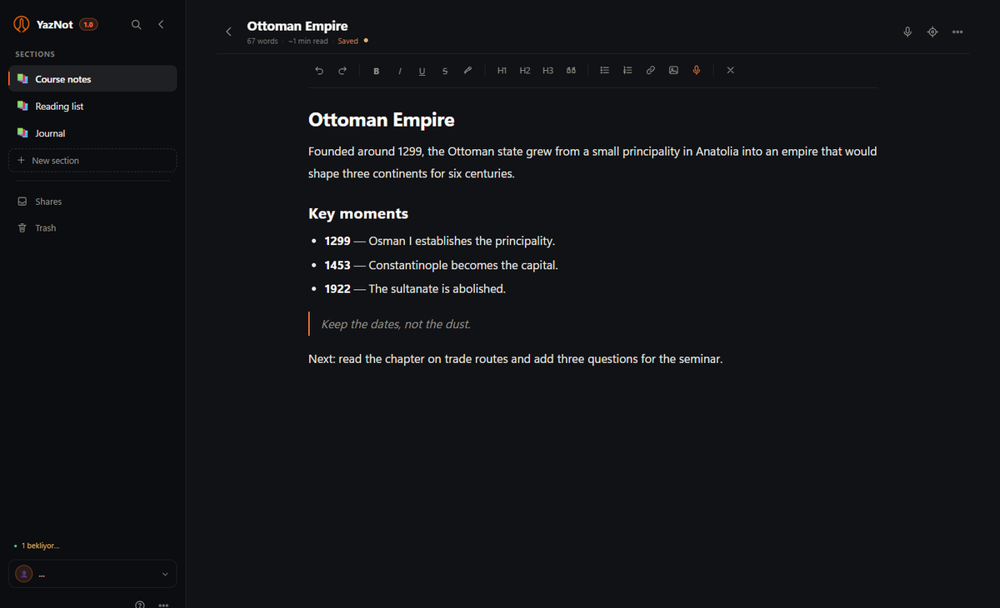

Yaz
Bölümler, gruplar ve kitap gibi okuma. Düşünceni düzenli tut; arama ve odak modu gerisini halleder.
YazNot 1.0 · Windows + web
Sade bir not defteri. Windows'ta çevrimdışı çalışır, telefonda uygulama gibi açılır; aynı hesapla notların her yerde aynı kalır.

37 saniye
Ne yaptığını gösteren sessiz bir tur.
Üç parça
Yaz, konuş, sakla. Geri kalan ayrıntılar yolda kaybolmasın.
Bölümler, gruplar ve kitap gibi okuma. Düşünceni düzenli tut; arama ve odak modu gerisini halleder.
Türkçe ve İngilizce konuşmayı cihazında yazıya çevir. Kayıt sunucuya gitmez.
Aynı hesap, her cihaz. Günlük yedek, çevrimdışı çalışma ve PDF / TXT / Markdown çıkışı.
Windows
4,4 MB'lık tek kurulum. İnternet olmadan yaz, bağlantı gelince eşitle.
YazNot'u indirWindows 10/11 · 64-bitİlk açılışta Windows uyarırsa: Daha fazla bilgi → Yine de çalıştır.
Telefon
Web uygulamasını aç, tarayıcı menüsünden ana ekrana ekle. Mağaza yok, ayrı indirme yok.
Android: Uygulamayı yükle · iPhone: Paylaş → Ana Ekrana Ekle
Uygulamayı aç →Kılavuz
Kılavuz uygulamanın içinde; PDF sürümü de burada. Bölümler, ses, dışa aktarma ve kısayollar.
PDF · 9 sayfa · Türkçe